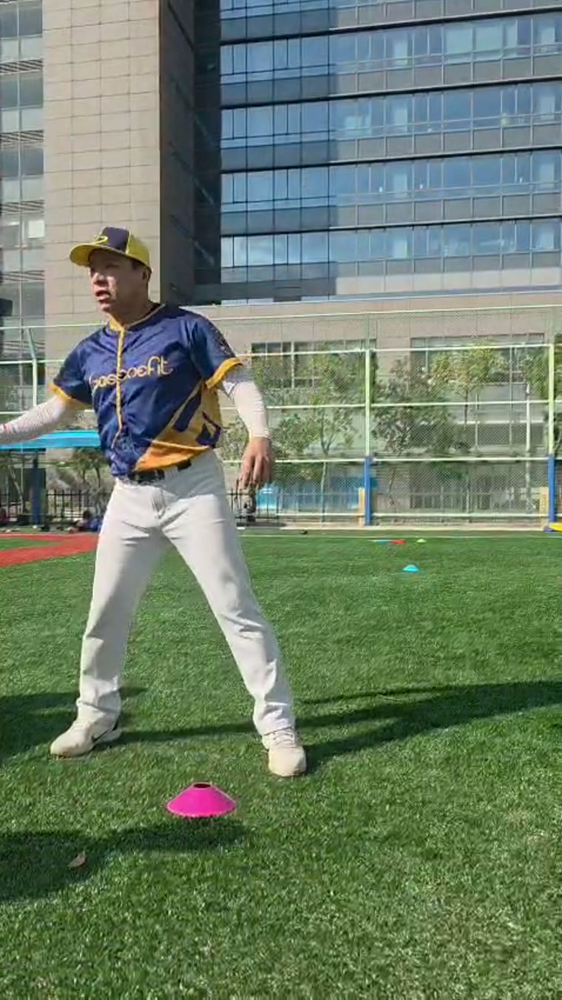

往上順上去的瞬間
Carrying the momentum up

起身的時候不能挺頓，要順著往前往後再往上的節奏走；中途停住就沒有順暢度。四格對應起、蓄、送、收。
The rise has to be continuous: forward, back, then up — stopping halfway kills the flow. Four frames for the load, the drive and the finish.
Carrying the momentum up

起身的時候不能挺頓，要順著往前往後再往上的節奏走；中途停住就沒有順暢度。四格對應起、蓄、送、收。
The rise has to be continuous: forward, back, then up — stopping halfway kills the flow. Four frames for the load, the drive and the finish.